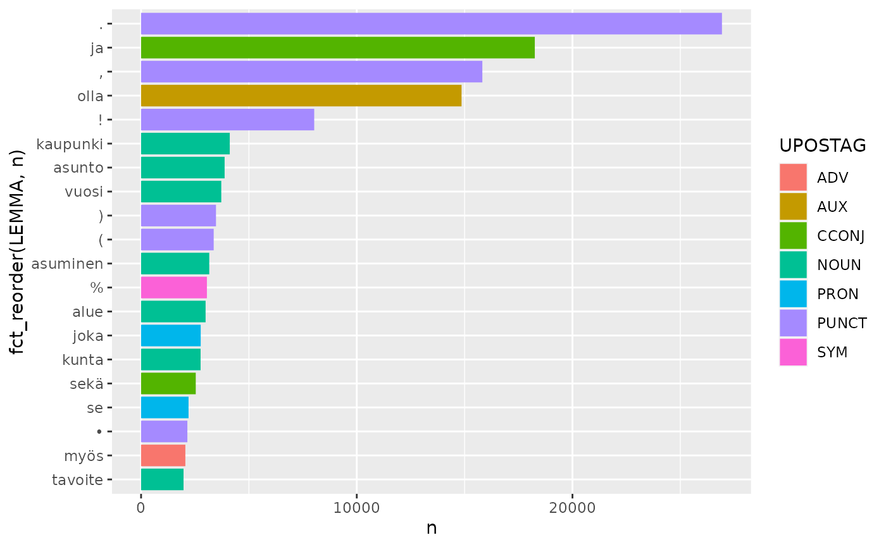

2 Tekstianalyysi tidytext-paketilla
Source:vignettes/articles/2-Tekstianalyysi-tidytext-paketilla.Rmd
2-Tekstianalyysi-tidytext-paketilla.Rmd
library(rfintext)
# devtools::install_github("StranMax/rfinstats")
library(rfinstats)
library(dplyr)
library(sf)
library(tidytext)
library(ggplot2)
library(stringr)
library(forcats)
aspol |>
count(LEMMA, UPOSTAG, sort = TRUE) |>
slice_max(n, n = 20) |>
ggplot() +
geom_col(aes(x = n, y = fct_reorder(LEMMA, n), fill = UPOSTAG))
suodatettavat <- c("✓", "", "x", "X", "@", "bostad")
pattern <- str_c(suodatettavat, collapse = "|")
noun_adj_verb <- aspol |>
filter(UPOSTAG %in% c("NOUN", "ADJ", "VERB"), # Vain merkitykselliset sanat
!str_detect(FEATS, "Foreign=Yes"), # Ruotsi- ja englanninkieliset mm.
!str_detect(LEMMA, pattern))
sanat_per_luokka <- noun_adj_verb |>
left_join(taantuvat, by = join_by("kunta" == "kunta_nimi")) |>
filter(!is.na(luokka)) |>
count(luokka, LEMMA, sort = TRUE)
sanat_per_luokka
#> # A tibble: 39,163 × 3
#> luokka LEMMA n
#> <fct> <chr> <int>
#> 1 Voimakkaasti kasvava kaupunki 1100
#> 2 Voimakkaasti kasvava asunto 987
#> 3 Kasvava asunto 946
#> 4 Voimakkaasti taantuva kunta 940
#> 5 Voimakkaasti kasvava vuosi 879
#> 6 Kasvava vuosi 834
#> 7 Kasvava alue 789
#> 8 Kasvava kaupunki 784
#> 9 Kasvava asuminen 757
#> 10 Voimakkaasti kasvava alue 683
#> # ℹ 39,153 more rows
sanat_yhteensä_per_luokka <- sanat_per_luokka |>
group_by(luokka) |>
summarise(total = sum(n))
sanat_yhteensä_per_luokka
#> # A tibble: 6 × 2
#> luokka total
#> <fct> <int>
#> 1 Voimakkaasti taantuva 38740
#> 2 Taantuva 28764
#> 3 Hieman taantuva 32712
#> 4 Hieman kasvava 19978
#> 5 Kasvava 54565
#> 6 Voimakkaasti kasvava 50449
sanamäärät <- left_join(sanat_per_luokka, sanat_yhteensä_per_luokka)
sanamäärät
#> # A tibble: 39,163 × 4
#> luokka LEMMA n total
#> <fct> <chr> <int> <int>
#> 1 Voimakkaasti kasvava kaupunki 1100 50449
#> 2 Voimakkaasti kasvava asunto 987 50449
#> 3 Kasvava asunto 946 54565
#> 4 Voimakkaasti taantuva kunta 940 38740
#> 5 Voimakkaasti kasvava vuosi 879 50449
#> 6 Kasvava vuosi 834 54565
#> 7 Kasvava alue 789 54565
#> 8 Kasvava kaupunki 784 54565
#> 9 Kasvava asuminen 757 54565
#> 10 Voimakkaasti kasvava alue 683 50449
#> # ℹ 39,153 more rows
ggplot(sanamäärät, aes(n/total, fill = luokka)) +
geom_histogram(show.legend = FALSE) +
xlim(NA, 0.0009) +
facet_wrap(~luokka, ncol = 2, scales = "free_y")
freq_by_rank <- sanamäärät %>%
group_by(luokka) %>%
mutate(rank = row_number(),
`term frequency` = n/total) %>%
ungroup()
freq_by_rank
#> # A tibble: 39,163 × 6
#> luokka LEMMA n total rank `term frequency`
#> <fct> <chr> <int> <int> <int> <dbl>
#> 1 Voimakkaasti kasvava kaupunki 1100 50449 1 0.0218
#> 2 Voimakkaasti kasvava asunto 987 50449 2 0.0196
#> 3 Kasvava asunto 946 54565 1 0.0173
#> 4 Voimakkaasti taantuva kunta 940 38740 1 0.0243
#> 5 Voimakkaasti kasvava vuosi 879 50449 3 0.0174
#> 6 Kasvava vuosi 834 54565 2 0.0153
#> 7 Kasvava alue 789 54565 3 0.0145
#> 8 Kasvava kaupunki 784 54565 4 0.0144
#> 9 Kasvava asuminen 757 54565 5 0.0139
#> 10 Voimakkaasti kasvava alue 683 50449 4 0.0135
#> # ℹ 39,153 more rows
freq_by_rank %>%
ggplot(aes(rank, `term frequency`, color = luokka)) +
geom_line(linewidth = 1.1, alpha = 0.8, show.legend = TRUE) +
scale_x_log10() +
scale_y_log10()
luokka_tf_idf <- sanamäärät %>%
bind_tf_idf(LEMMA, luokka, n)
luokka_tf_idf
#> # A tibble: 39,163 × 7
#> luokka LEMMA n total tf idf tf_idf
#> <fct> <chr> <int> <int> <dbl> <dbl> <dbl>
#> 1 Voimakkaasti kasvava kaupunki 1100 50449 0.0218 0 0
#> 2 Voimakkaasti kasvava asunto 987 50449 0.0196 0 0
#> 3 Kasvava asunto 946 54565 0.0173 0 0
#> 4 Voimakkaasti taantuva kunta 940 38740 0.0243 0 0
#> 5 Voimakkaasti kasvava vuosi 879 50449 0.0174 0 0
#> 6 Kasvava vuosi 834 54565 0.0153 0 0
#> 7 Kasvava alue 789 54565 0.0145 0 0
#> 8 Kasvava kaupunki 784 54565 0.0144 0 0
#> 9 Kasvava asuminen 757 54565 0.0139 0 0
#> 10 Voimakkaasti kasvava alue 683 50449 0.0135 0 0
#> # ℹ 39,153 more rows
luokka_tf_idf %>%
select(-total) %>%
arrange(desc(tf_idf))
#> # A tibble: 39,163 × 6
#> luokka LEMMA n tf idf tf_idf
#> <fct> <chr> <int> <dbl> <dbl> <dbl>
#> 1 Hieman kasvava kanta#kaupunki 143 0.00716 0.405 0.00290
#> 2 Hieman taantuva koti#kulma 50 0.00153 1.79 0.00274
#> 3 Hieman kasvava avainteema 28 0.00140 1.79 0.00251
#> 4 Taantuva toimiala 36 0.00125 1.79 0.00224
#> 5 Voimakkaasti taantuva Mänttä#vilppula 43 0.00111 1.79 0.00199
#> 6 Voimakkaasti taantuva luokitus 38 0.000981 1.79 0.00176
#> 7 Voimakkaasti taantuva koskelan#talo 36 0.000929 1.79 0.00167
#> 8 Hieman kasvava jatko#aika#päätös 16 0.000801 1.79 0.00143
#> 9 Hieman kasvava kuntalainen#kysely 16 0.000801 1.79 0.00143
#> 10 Hieman kasvava alue#analyysi 15 0.000751 1.79 0.00135
#> # ℹ 39,153 more rows
luokka_tf_idf %>%
group_by(luokka) %>%
slice_max(tf_idf, n = 10) %>%
ungroup() %>%
ggplot(aes(tf_idf, fct_reorder(LEMMA, tf_idf), fill = luokka)) +
geom_col(show.legend = FALSE) +
facet_wrap(~luokka, ncol = 2, scales = "free") +
labs(x = "tf-idf", y = NULL)
kappaleet <- aspol |>
filter(UPOSTAG %in% c("NOUN", "VERB"),
!str_detect(LEMMA, pattern),
nchar(LEMMA) > 2) |>
mutate(kappale = paste0(kunta, "-", sent)) |>
count(kappale, LEMMA)
word_pairs <- kappaleet |>
pairwise_count(LEMMA, kappale, sort = TRUE, upper = FALSE)
word_pairs
#> # A tibble: 466,180 × 3
#> item1 item2 n
#> <chr> <chr> <dbl>
#> 1 vuosi asunto 498
#> 2 alue kaupunki 371
#> 3 vuosi kaupunki 362
#> 4 asunto kaupunki 342
#> 5 tavoite kaupunki 291
#> 6 vuosi aika 283
#> 7 asuminen palvelu 271
#> 8 asuminen kaupunki 269
#> 9 kaupunki ohjelma 268
#> 10 asuminen asunto 261
#> # ℹ 466,170 more rows
word_cors <- kappaleet %>%
group_by(LEMMA) %>%
filter(n() >= 40) %>%
pairwise_cor(LEMMA, kappale, sort = TRUE, upper = FALSE)
word_cors
#> # A tibble: 292,230 × 3
#> item1 item2 correlation
#> <chr> <chr> <dbl>
#> 1 rivi ketju#talo 0.665
#> 2 rahoitus kehittää#keskus 0.558
#> 3 palvelu#asuminen tehostaa 0.557
#> 4 asuin#kerros#talo ketju#talo 0.530
#> 5 ottaa huomio 0.515
#> 6 kävely pyöräily 0.495
#> 7 huomio kiinnittää 0.494
#> 8 pien#talo ketju#talo 0.472
#> 9 pien#talo rivi 0.422
#> 10 hallinta rahoitus#muoto 0.409
#> # ℹ 292,220 more rows
word_cors |>
mutate(sanapari = paste0(item1, " <-> ", item2)) |>
slice_max(correlation, n = 20) |>
ggplot() +
geom_col(aes(x = correlation, y = fct_reorder(sanapari, correlation)))
kappaleet_kunta <- noun_adj_verb |>
count(kunta, LEMMA)
word_pairs_kunta <- kappaleet_kunta |>
pairwise_count(LEMMA, kunta, sort = TRUE, upper = FALSE)
word_pairs_kunta
#> # A tibble: 42,618,699 × 3
#> item1 item2 n
#> <chr> <chr> <dbl>
#> 1 asunto vuosi 64
#> 2 asunto tarve 63
#> 3 asunto uusi 63
#> 4 tarve vuosi 63
#> 5 uusi vuosi 63
#> 6 alue asunto 62
#> 7 asunto olla 62
#> 8 asunto osa 62
#> 9 alue tarve 62
#> 10 osa tarve 62
#> # ℹ 42,618,689 more rows
word_cors_kunta <- kappaleet_kunta %>%
group_by(LEMMA) %>%
filter(n() >= 40) %>%
pairwise_cor(LEMMA, kunta, sort = TRUE, upper = FALSE)
word_cors_kunta
#> # A tibble: 32,385 × 3
#> item1 item2 correlation
#> <chr> <chr> <dbl>
#> 1 asunto vuosi 1
#> 2 koko vastata 0.887
#> 3 3. 4. 0.875
#> 4 alue kehittäminen 0.859
#> 5 kehittäminen osa 0.859
#> 6 osa tavoite 0.859
#> 7 erilainen ohjata 0.831
#> 8 mahdollinen ottaa 0.831
#> 9 asunto#kanta vastata 0.831
#> 10 kehitys vastata 0.831
#> # ℹ 32,375 more rows